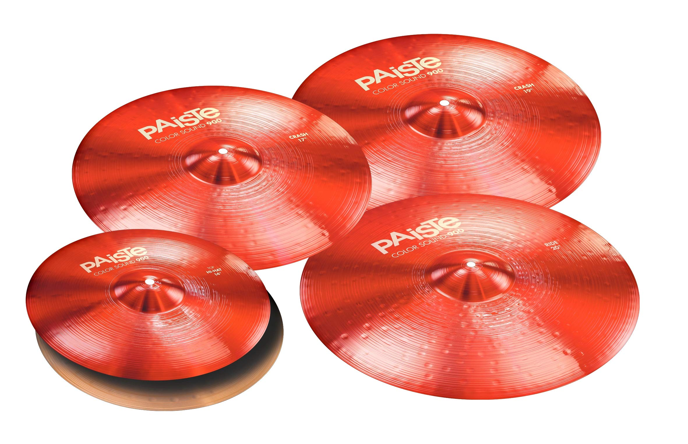
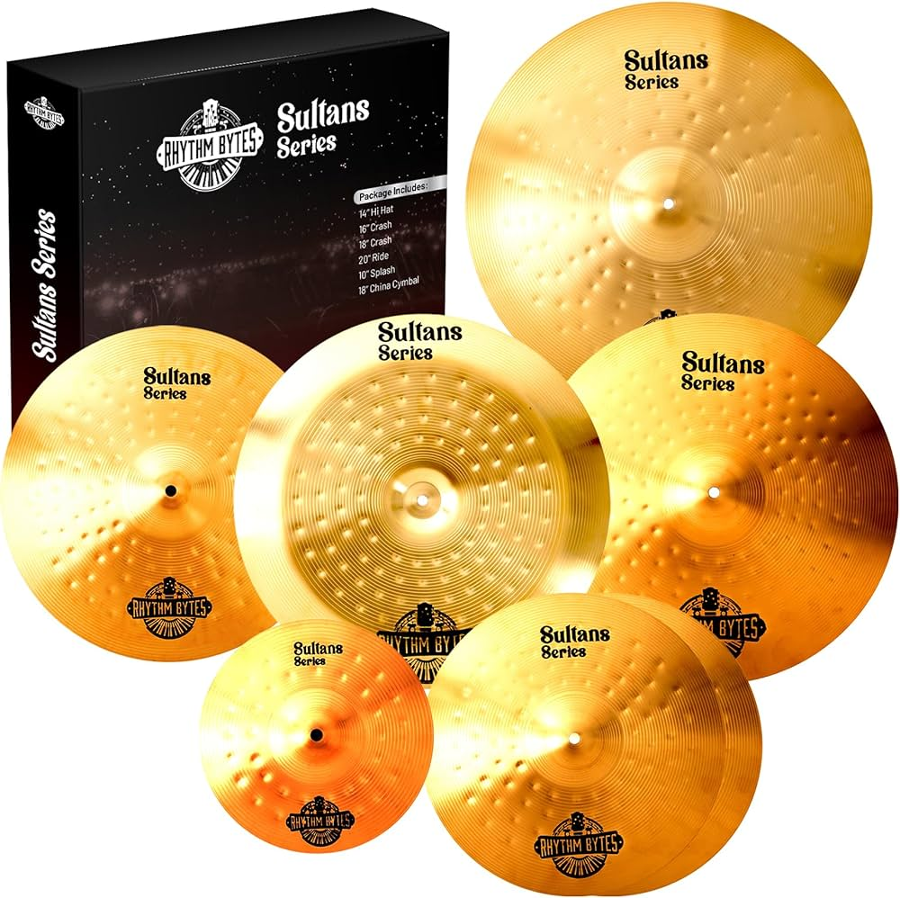
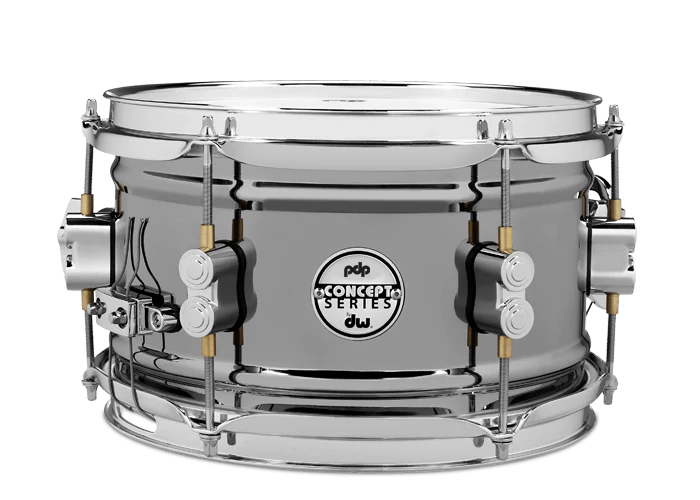
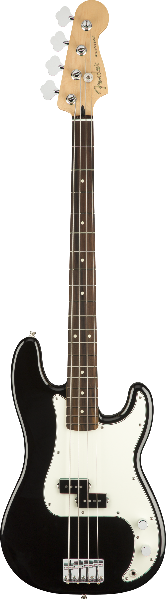

|  |
Caracteristicas
- Paiste Color Sound 900 Series Set de platillos de tamaño mediano con 17 pulgadas Crash (rojo)
- Sombreros Hi-Hats de 14 pulgadas, 19 pulgadas Crash, 20 pulgadas Ride, Free 17 pulgadas Crash
Hecho a mano en Suiza, martillado a mano
Platillos nítidos y sensibles
Aleación de bronce 2002 (CuSn8)
Acabado de sonido en color
- a solo $1500
|
Promocion
- en la compra de sus platillos le damos una 30% de descuento para sus proxima compra
|
|  |
Caracteristicas
- Set De Platillos Para Batería Vansir 4 Pcs Mas Funda V-brx
- Platillos hechos de latón, para sonido en vivo, de rango medio con amplia gama de frecuencia en sonido, buen nivel de sustain y volumen.
Precioso acabado natural y brillante.
El Set de platillos para bateria Vansir Gold, calidad garantizada.
Incluye:
-Hi Hat de 14"
-Crash de 16"
-Ride de 20"
-Funda para transportar
Nota: SÍ EMITIMOS FACTURA y nuestros precios ya incluyen IVA.
Garantía del vendedor: 3 meses
- a solo $1500
|
Promocion
- en la compra de sus platillos le regalos un producto sorpresa
|
|  |
caracteristicas
- Medida de tarola 13
- Marca DW
- Precio=11,000
- Esta hecho de madera, de buena calidad es escencial para eventos y ensayos
- Borde de rodamiento de 30 grados, 8 agujas, aros de triple brida de 2,3 mm.
- 100% metalico
- a solo $15000
|
Promocion
- EN LA COMPRA DE LA TAROLA TENDRA UN 20% DE DESCUENTO EN LAS BAQUETAS
- 20% DE DESCUENTO MARTES Y JUEVES
|
|  |
Caracteristicas
- Un sonido cálido y suave.
- Un cuerpo grande, con una caja de resonancia que amplifica el sonido.
- Un diapasón más ancho que el del bajo eléctrico, lo que dificulta la ejecución de las notas más graves.
- a solo $11000
|
Promociones
- En la compra de un bajo odtienes el 15% en un estuche
- en la compra de un bajo odtienes un mini amplificador
|